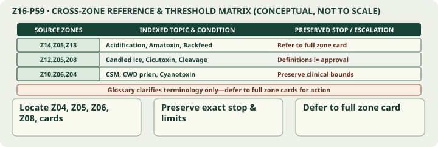

Z16-P59 · Field reference atlas · New manuscript
Encyclopedia Technical Glossary: A through C
Locate the original encyclopedia cards for encyclopedia Technical Glossary: A through C.
When it applies · Offline reference lookup. The linked chapter defines the situation, audience and limits.
Equipment · Offline reader or the complete linked source cards in print.

Actions
- Open Z10-P55 for recognize anaphylaxis and assist with a patient's prescribed epinephrine; Z08-P59 for naturally Occurring Asbestos and Elongated Mineral Fibers.[A10, M08, R07]
- Open Z04-P14 for reject water near harmful algal blooms and blue-green scum; Z08-P16 for cleavage Planes vs Conchoidal and Hackly Fracture.[A10, W15, R04]
- Read the linked card’s applicability, equipment and stop conditions together. Keep review and source limitations attached to any excerpt.[A10, ED]
Failure recognition · Acting on a keyword or title while overlooking an upstream exception or stop condition.[A10, ED]
Verify · Confirm the exact page ID and read the full conditions before using the reference.[A10, ED]
Stop or change course · If the situation falls outside a linked card’s conditions or its stop rule applies, stop using this index as a decision aid. Follow the full card and current local directions.[A10, ED]
Evidence and editorial notes
- A10 · FEMA / Ready.gov · Make a Plan (current web edition)
- Section: Offline reader navigation, historical lineage, and HOLD transparency · Conditions: Using the complete 16-zone offline archive, zone readers, and print proofs
Support: Navigation aids expose draft status, reconstruction lineage, open diagnostic photo needs, and pending specialist holds on every lookup path.
Limitations: This index entry does not independently establish any safety, regulatory or diagnostic instruction. · Conflicting evidence: None noted.
Editorial note: Index design and cross-reference policy. Substantive directions come from linked upstream chapter claims. · Specialist reviewer: Accessibility, print QA, and editorial reviewer
Primary source · checked 2026-11-24 - M08 · AHA and American Red Cross · 2024 Guidelines for First Aid (2024)
- Section: Anaphylaxis · Conditions: Suspected severe allergic reaction; community first aid; prescribed epinephrine or applicable local protocol
Support: Activate EMS promptly and assist with epinephrine under the relevant device or action plan. Follow professional direction for subsequent care.
Limitations: Pediatric device selection, subsequent dose, timing and transfer require product, patient and local protocol. · Conflicting evidence: See A02 claim audit for boundaries.
Editorial note: Separates assisting with a patient's prescribed auto-injector from lay prescribing. · Specialist reviewer: Allergy/immunology and EMS
Primary source · checked 2026-11-25 - R04 · USGS · Collecting Rocks: Rock Classes and Mineral Property Basics (USGS GIP)
- Section: Hardness, luster, streak, and fracture vs cleavage · Conditions: Non-destructive mineral observation with simple field cues
Support: Scratch hardness, unglazed streak, luster, and fracture-versus-cleavage patterns narrow candidate mineral groups.
Limitations: Field scratch checks cannot establish chemical purity, trace heavy metals, or absence of hazardous fibers. · Conflicting evidence: Color alone is unreliable across quartz, calcite, and feldspar varieties.
Editorial note: Core Z08 mineral screening basis. · Specialist reviewer: Mineralogist
Primary source · checked 2026-11-25
Current assessment · A04-R04 (2026-11-25) · Bounded support confirmed from an alternate source (A04): The properties are identification clues. A record of an existing surface is preferred and a destructive field test cannot establish use safety. Limits: Specialist review PENDING (Mineralogist); publication HOLD. All release decisions pending. - R07 · U.S. EPA · Learn About Asbestos and Naturally Occurring Mineral Fibers (2025)
- Section: Naturally occurring asbestos and fibrous minerals · Conditions: Outcrops, fibrous veins, serpentinite, and iron-formation rock
Support: Naturally occurring asbestiform mineral fibers pose severe inhalation risks if disturbed, broken, or abraded.
Limitations: Field sight alone cannot distinguish benign fibrous minerals from regulated asbestos; leave fibrous mineral veins undisturbed. · Conflicting evidence: None noted.
Editorial note: Mandatory Z08 mineral-fiber stop rule. · Specialist reviewer: Industrial hygienist and mineralogist
Primary source · checked 2026-11-25
Current assessment · A04-R07 (2026-11-25) · Bounded support confirmed (A04): EPA identifies asbestos in rock and soil and health risks from airborne inhalation. Appearance cannot establish airborne exposure or absence. Limits: Specialist review PENDING (Industrial hygienist and mineralogist); publication HOLD. All release decisions pending. - W15 · US EPA · Learn About Harmful Algae, Cyanobacteria and Cyanotoxins (current web edition)
- Section: Cyanotoxins and water treatment · Conditions: Surface water with discolored scum, mats, foul odor, or active HAB advisory
Support: Do not use a suspect bloom as a drinking-water source. Routine field microbial treatment is not a validated method of removing cyanotoxins.
Limitations: Cyanotoxins can persist in visually clear water after a bloom dissipates. · Conflicting evidence: Contradicts naive boil-everything advice; CDC/EPA HAB warnings explicitly prohibit boiling HAB water.
Editorial note: Establishes HABs as a chemical-toxin rejection trigger, not a microbial boil target. · Specialist reviewer: Environmental health and drinking-water safety
Primary source · checked 2026-11-24
Source lineage · New manuscript (Z16 P20 glossary) · Classification · New manuscript.